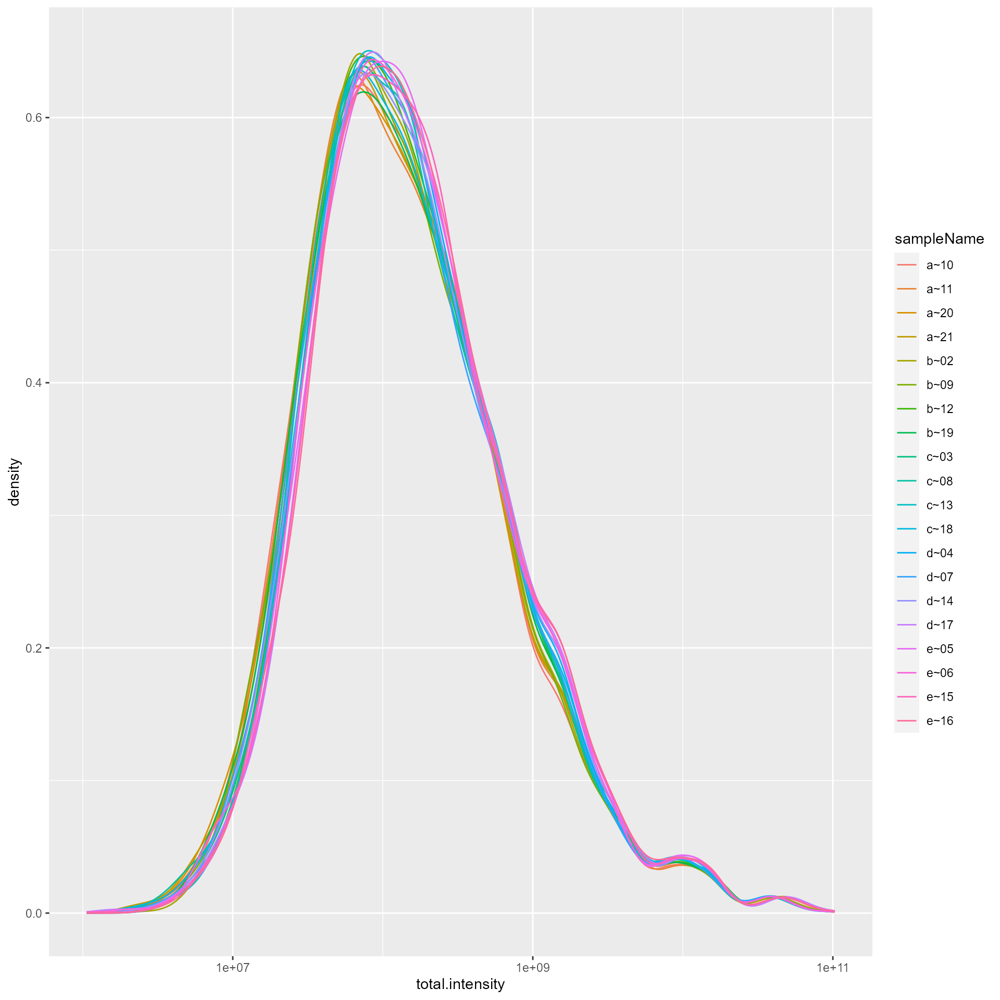
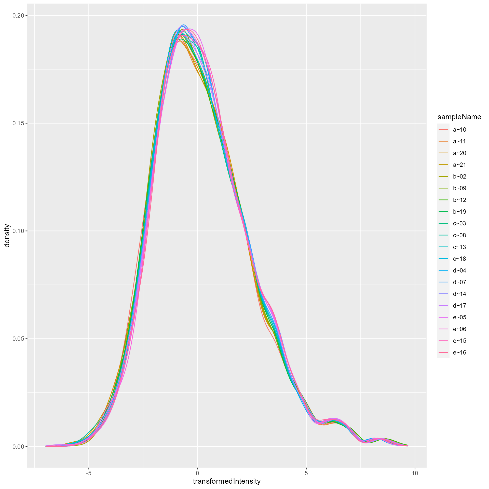
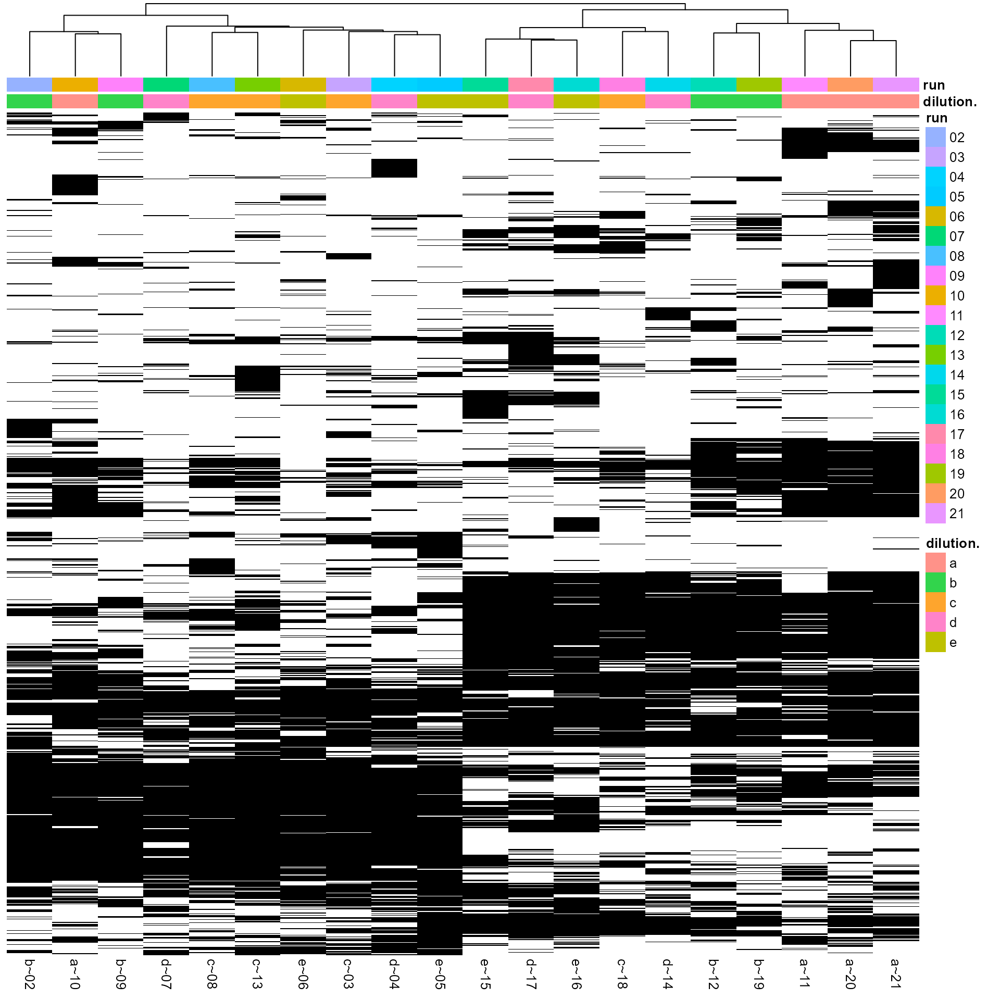
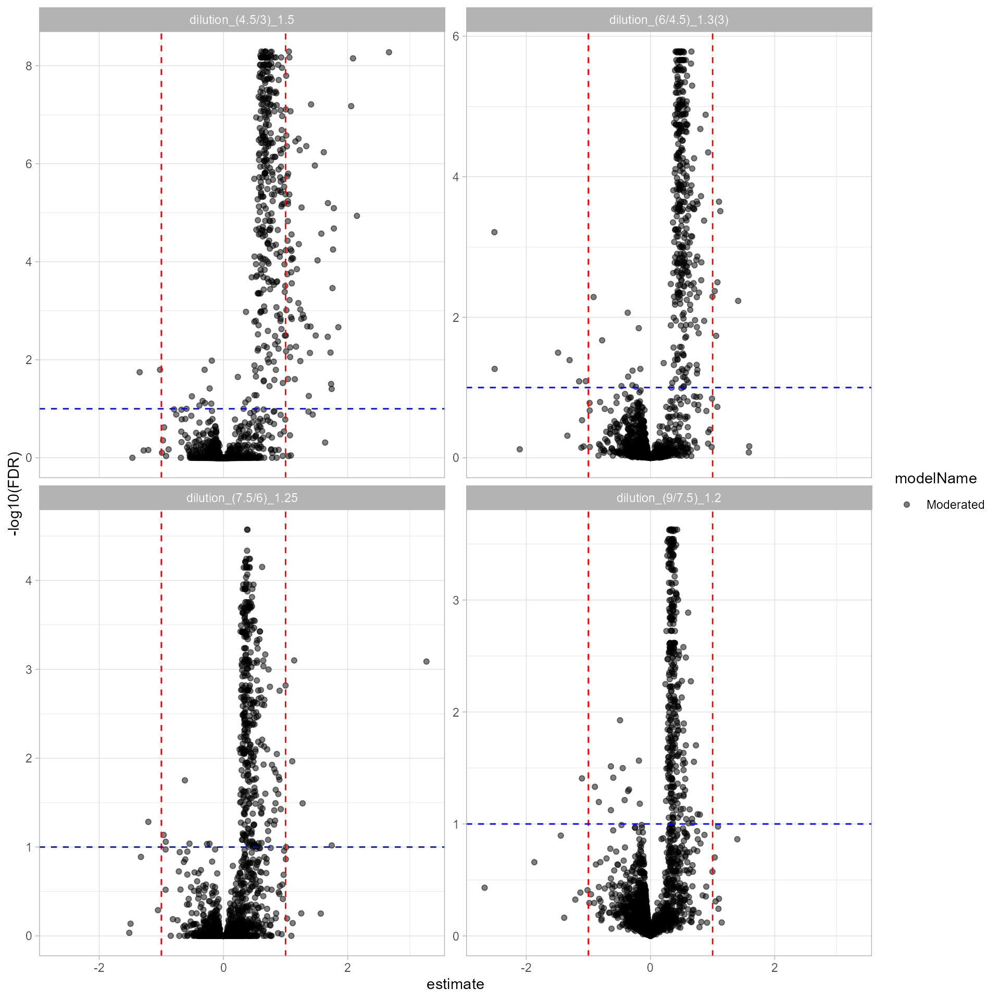
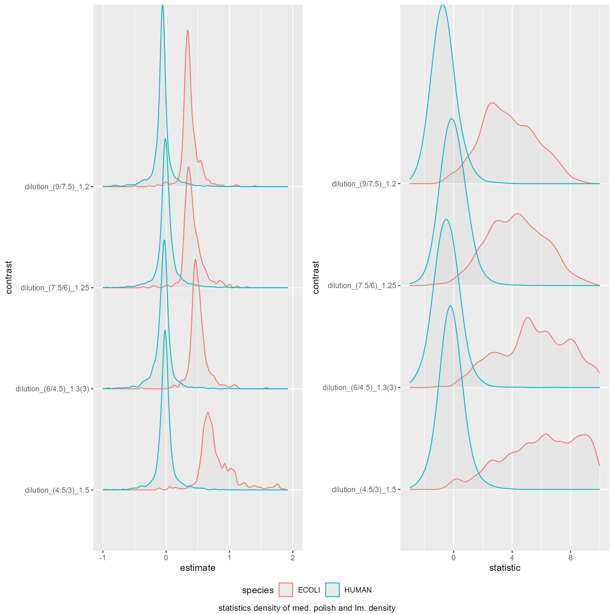
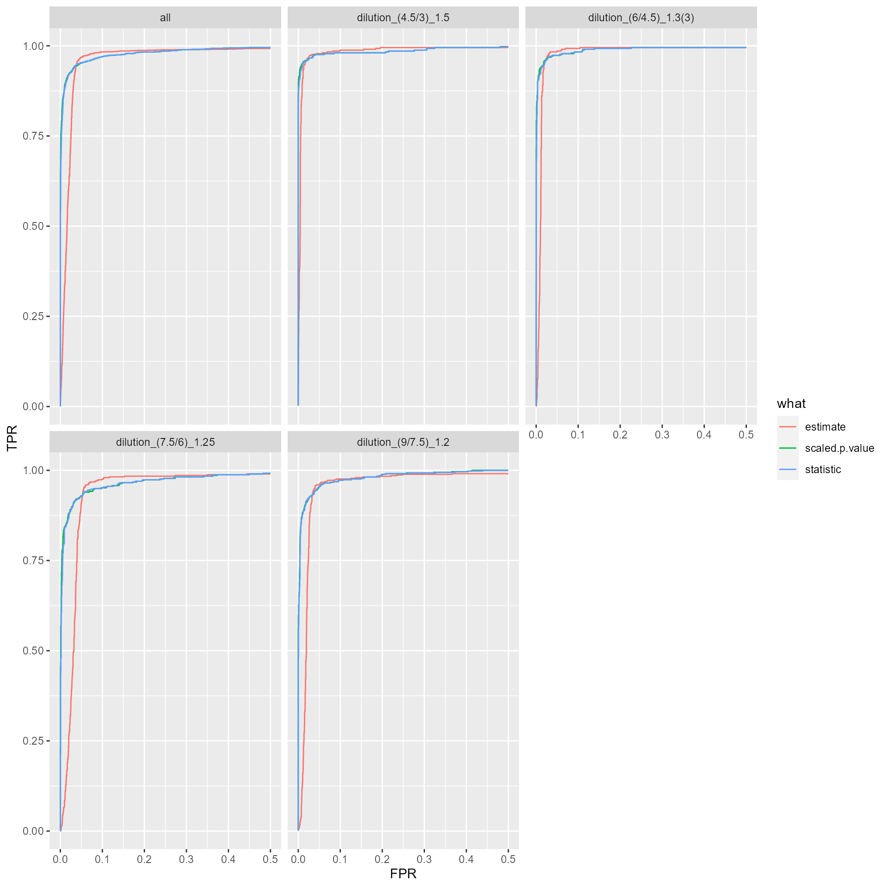
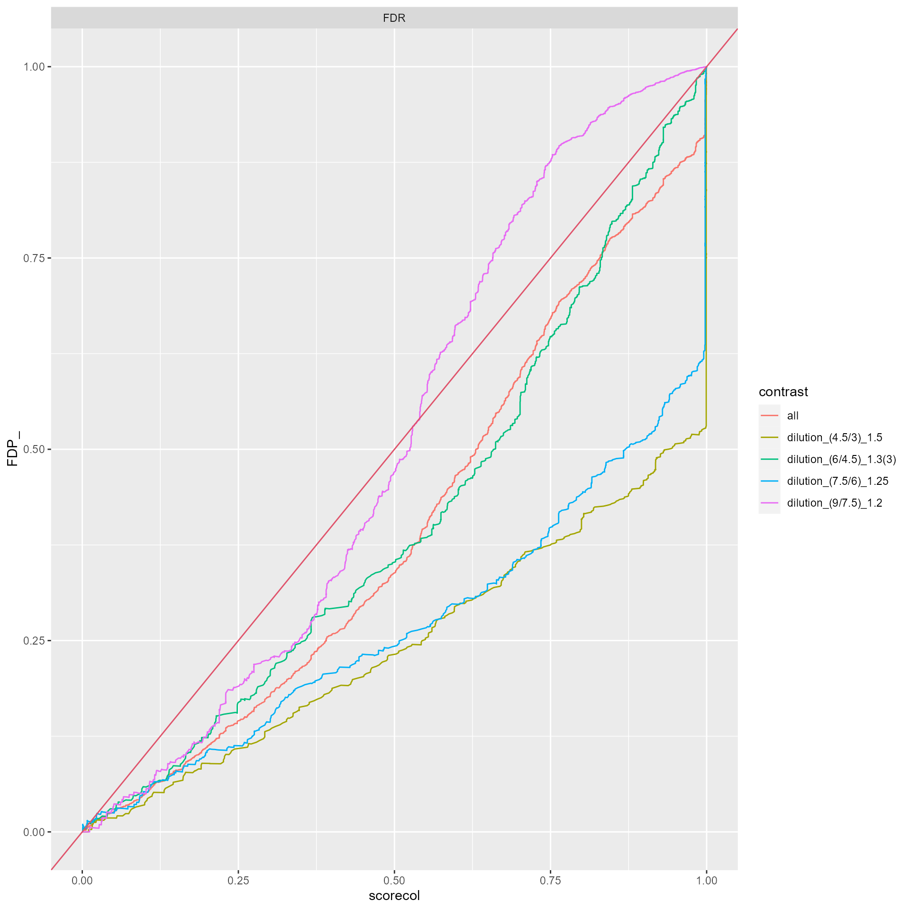

vignettes/BenchmarkMSFraggerProteinIonStar.Rmd
BenchmarkMSFraggerProteinIonStar.RmdPlease download and install the prolfquaData package from github
rm(list = ls())
library(conflicted)
library(prolfqua)
library(tidyverse)
library(dplyr)
conflicted::conflict_prefer("filter", "dplyr")We start by loading the IonStar dataset and the annotation from the prolfquaData package. The method add_annotation adds the annotation to the data.
datadir <- file.path(find.package("prolfquaData") , "quantdata")
inputMQfile <- file.path(datadir, "MSFragger_IonStar2018_PXD003881.zip")
inputAnnotation <- file.path(datadir, "annotation_Ionstar2018_PXD003881.xlsx")
annotation <- readxl::read_xlsx(inputAnnotation)
unzip(inputMQfile, list = TRUE)$Name## [1] "IonstarWithMSFragger/combined_peptide.tsv"
## [2] "IonstarWithMSFragger/combined_protein.tsv"
## [3] "IonstarWithMSFragger/fragger.params"
## [4] "IonstarWithMSFragger/fragpipe_2021-02-18_20-02-51.config"
## [5] "IonstarWithMSFragger/log_2021-02-18_23-40-52.txt"
## [6] "IonstarWithMSFragger/mbr_ion.tsv"
## [7] "IonstarWithMSFragger/MSstats.csv"
## [8] "IonstarWithMSFragger/reprint.int.tsv"
## [9] "IonstarWithMSFragger/reprint.spc.tsv"
protein <- as_tibble(read.csv(unz(inputMQfile,"IonstarWithMSFragger/combined_protein.tsv"),
header = TRUE, sep = "\t", stringsAsFactors = FALSE))
protein <- tidy_MSFragger_combined_protein(protein)
protein <- protein %>% filter(unique.stripped.peptides > 1)
#View(protein)
merged <- inner_join(annotation, protein)
atable <- AnalysisTableAnnotation$new()
atable$fileName = "raw.file"
atable$hierarchy[["protein_Id"]] <- c("protein")
atable$hierarchyDepth <- 1
atable$setWorkIntensity("total.intensity")
anaparam <- AnalysisParameters$new()
config <- AnalysisConfiguration$new(atable, anaparam)
config$table$factors[["dilution."]] = "sample"
config$table$factors[["run"]] = "run_ID"
config$table$factorDepth <- 1
adata <- setup_analysis(merged, config)
lfqdata <- LFQData$new(adata, config)
lfqdata$remove_small_intensities()
pl <- lfqdata$get_Plotter()
pl$intensity_distribution_density()
subset_h <- lfqdata$get_copy()
subset_h$data <- subset_h$data %>% filter(grepl("HUMAN", protein_Id))
tr <- lfqdata$get_Transformer()
lfqdataNormalized <- tr$log2_robscale_subset(lfqsubset = subset_h)
pl <- lfqdataNormalized$get_Plotter()
pl$intensity_distribution_density()
hm <- pl$NA_heatmap()
hm
lfqdataNormalized$summarize_hierarchy()## # A tibble: 3,934 x 2
## protein_Id n
## <chr> <int>
## 1 sp|A0AVT1|UBA6_HUMAN 1
## 2 sp|A0FGR8|ESYT2_HUMAN 1
## 3 sp|A0MZ66|SHOT1_HUMAN 1
## 4 sp|A1L0T0|ILVBL_HUMAN 1
## 5 sp|A1X283|SPD2B_HUMAN 1
## 6 sp|A2RRP1|NBAS_HUMAN 1
## 7 sp|A2RTX5|SYTC2_HUMAN 1
## 8 sp|A3KN83|SBNO1_HUMAN 1
## 9 sp|A4D1E9|GTPBA_HUMAN 1
## 10 sp|A5PLL7|TM189_HUMAN 1
## # ... with 3,924 more rows
summariz <- lfqdataNormalized$get_Summariser()
summariz$hierarchy_counts_sample()## # A tibble: 20 x 3
## # Groups: isotopeLabel [1]
## isotopeLabel sampleName protein_Id
## <chr> <chr> <int>
## 1 light a~10 3321
## 2 light a~11 3376
## 3 light a~20 3275
## 4 light a~21 3242
## 5 light b~02 3379
## 6 light b~09 3422
## 7 light b~12 3356
## 8 light b~19 3373
## 9 light c~03 3371
## 10 light c~08 3415
## 11 light c~13 3324
## 12 light c~18 3412
## 13 light d~04 3378
## 14 light d~07 3491
## 15 light d~14 3456
## 16 light d~17 3307
## 17 light e~05 3370
## 18 light e~06 3449
## 19 light e~15 3327
## 20 light e~16 3308
summariz$interaction_missing_stats()## $data
## # A tibble: 19,670 x 8
## dilution. protein_Id isotopeLabel nrReplicates nrNAs meanArea medianArea
## <chr> <chr> <chr> <int> <int> <dbl> <dbl>
## 1 a sp|A0AVT1|UBA6~ light 4 0 -1.23 -1.26
## 2 a sp|A0FGR8|ESYT~ light 4 0 0.429 0.426
## 3 a sp|A0MZ66|SHOT~ light 4 0 -0.510 -0.512
## 4 a sp|A1L0T0|ILVB~ light 4 1 -2.24 -2.13
## 5 a sp|A1X283|SPD2~ light 4 4 NaN NA
## 6 a sp|A2RRP1|NBAS~ light 4 2 -4.13 -4.13
## 7 a sp|A2RTX5|SYTC~ light 4 0 0.0592 0.0508
## 8 a sp|A3KN83|SBNO~ light 4 2 -3.64 -3.64
## 9 a sp|A4D1E9|GTPB~ light 4 0 -2.04 -2.01
## 10 a sp|A5PLL7|TM18~ light 4 4 NaN NA
## # ... with 19,660 more rows, and 1 more variable: nrMeasured <int>
##
## $summaries
## [1] "nrReplicates" "nrNAs" "nrMeasured" "meanArea" "medianArea"
summariz$missingness_per_condition()## # A tibble: 5 x 8
## # Groups: isotopeLabel, dilution. [5]
## isotopeLabel dilution. nrReplicates `0` `1` `2` `3` `4`
## <chr> <chr> <int> <int> <int> <int> <int> <int>
## 1 light a 4 2900 307 230 233 264
## 2 light b 4 2948 299 309 223 155
## 3 light c 4 2977 315 191 287 164
## 4 light d 4 2969 295 320 231 119
## 5 light e 4 2969 221 337 241 166
summariz$missingness_per_condition_cumsum()## # A tibble: 5 x 8
## # Groups: isotopeLabel, dilution. [5]
## isotopeLabel dilution. nrReplicates `0` `1` `2` `3` `4`
## <chr> <chr> <int> <int> <int> <int> <int> <int>
## 1 light a 4 2900 3207 3437 3670 3934
## 2 light b 4 2948 3247 3556 3779 3934
## 3 light c 4 2977 3292 3483 3770 3934
## 4 light d 4 2969 3264 3584 3815 3934
## 5 light e 4 2969 3190 3527 3768 3934
summariz$hierarchy_counts_sample()## # A tibble: 20 x 3
## # Groups: isotopeLabel [1]
## isotopeLabel sampleName protein_Id
## <chr> <chr> <int>
## 1 light a~10 3321
## 2 light a~11 3376
## 3 light a~20 3275
## 4 light a~21 3242
## 5 light b~02 3379
## 6 light b~09 3422
## 7 light b~12 3356
## 8 light b~19 3373
## 9 light c~03 3371
## 10 light c~08 3415
## 11 light c~13 3324
## 12 light c~18 3412
## 13 light d~04 3378
## 14 light d~07 3491
## 15 light d~14 3456
## 16 light d~17 3307
## 17 light e~05 3370
## 18 light e~06 3449
## 19 light e~15 3327
## 20 light e~16 3308
Contrasts <- c(
"dilution_(9/7.5)_1.2" = "dilution.e - dilution.d",
"dilution_(7.5/6)_1.25" = "dilution.d - dilution.c",
"dilution_(6/4.5)_1.3(3)" = "dilution.c - dilution.b",
"dilution_(4.5/3)_1.5" = "dilution.b - dilution.a"
)
lmmodel <- "~ dilution."
lmmodel <- paste0(lfqdataNormalized$config$table$getWorkIntensity() , lmmodel)
modelFunction <- strategy_lm( lmmodel, model_name = "Model")
mod <- prolfqua::build_model(lfqdataNormalized$data, modelFunction)
contr <- prolfqua::ContrastsModerated$new(prolfqua::Contrasts$new(mod, Contrasts))
contrdf <- contr$get_contrasts()
cp <- contr$get_Plotter()
cp$volcano()## $FDR
ttd <- prolfqua::ionstar_bench_preprocess(contrdf)
medpol_benchmark <- make_benchmark(ttd$data,
model_description = "med. polish and lm. density",
model_name = "prot_med_lm",
FDRvsFDP = list(list(sc = "FDR", desc = FALSE))
)
medpol_benchmark$data()## # A tibble: 15,664 x 18
## modelName contrast protein_Id c1 c2 c1_name c2_name estimate
## <chr> <chr> <chr> <dbl> <dbl> <chr> <chr> <dbl>
## 1 Moderated dilution_(4~ sp|A0AVT1|UBA~ -1.27 -1.23 diluti~ diluti~ -0.0453
## 2 Moderated dilution_(4~ sp|A0FGR8|ESY~ 0.437 0.429 diluti~ diluti~ 0.00768
## 3 Moderated dilution_(4~ sp|A0MZ66|SHO~ -0.530 -0.510 diluti~ diluti~ -0.0198
## 4 Moderated dilution_(4~ sp|A1L0T0|ILV~ -2.24 -2.24 diluti~ diluti~ -0.00124
## 5 Moderated dilution_(4~ sp|A1X283|SPD~ NA -2.50 diluti~ diluti~ NA
## 6 Moderated dilution_(4~ sp|A3KN83|SBN~ -3.35 -3.64 diluti~ diluti~ 0.283
## 7 Moderated dilution_(4~ sp|A4D1E9|GTP~ -1.95 -2.04 diluti~ diluti~ 0.0910
## 8 Moderated dilution_(4~ sp|A5YKK6|CNO~ -0.757 -0.786 diluti~ diluti~ 0.0292
## 9 Moderated dilution_(4~ sp|A6NDG6|PGP~ -0.113 -0.0994 diluti~ diluti~ -0.0132
## 10 Moderated dilution_(4~ sp|A6NHR9|SMH~ -1.11 -0.976 diluti~ diluti~ -0.130
## # ... with 15,654 more rows, and 10 more variables: statistic <dbl>, df <dbl>,
## # p.value <dbl>, conf.low <dbl>, conf.high <dbl>, sigma <dbl>, FDR <dbl>,
## # species <chr>, TP <lgl>, scaled.p.value <dbl>
medpol_benchmark$plot_score_distribution()
medpol_benchmark$plot_ROC()
medpol_benchmark$plot_FDRvsFDP()
medpol_benchmark$get_confusion()## # A tibble: 28,762 x 17
## scorecol TP what F_ T_ R FDP TP_hits FN_hits FP_hits TN_hits
## <dbl> <lgl> <chr> <int> <int> <int> <dbl> <int> <int> <int> <int>
## 1 5.14e-9 TRUE FDR 12517 1864 1 0 1 1863 0 12517
## 2 5.14e-9 TRUE FDR 12517 1864 2 0 2 1862 0 12517
## 3 5.14e-9 TRUE FDR 12517 1864 3 0 3 1861 0 12517
## 4 5.14e-9 TRUE FDR 12517 1864 4 0 4 1860 0 12517
## 5 5.14e-9 TRUE FDR 12517 1864 5 0 5 1859 0 12517
## 6 5.18e-9 TRUE FDR 12517 1864 6 0 6 1858 0 12517
## 7 5.31e-9 TRUE FDR 12517 1864 7 0 7 1857 0 12517
## 8 5.31e-9 TRUE FDR 12517 1864 8 0 8 1856 0 12517
## 9 5.31e-9 TRUE FDR 12517 1864 9 0 9 1855 0 12517
## 10 6.15e-9 TRUE FDR 12517 1864 10 0 10 1854 0 12517
## # ... with 28,752 more rows, and 6 more variables: FPR <dbl>, TPR <dbl>,
## # ACC <dbl>, FDP_ <dbl>, model_name <chr>, contrast <chr>
medpol_benchmark$get_FDRvsFDP()## # A tibble: 28,762 x 17
## scorecol TP what F_ T_ R FDP TP_hits FN_hits FP_hits TN_hits
## <dbl> <lgl> <chr> <int> <int> <int> <dbl> <int> <int> <int> <int>
## 1 5.14e-9 TRUE FDR 12517 1864 1 0 1 1863 0 12517
## 2 5.14e-9 TRUE FDR 12517 1864 2 0 2 1862 0 12517
## 3 5.14e-9 TRUE FDR 12517 1864 3 0 3 1861 0 12517
## 4 5.14e-9 TRUE FDR 12517 1864 4 0 4 1860 0 12517
## 5 5.14e-9 TRUE FDR 12517 1864 5 0 5 1859 0 12517
## 6 5.18e-9 TRUE FDR 12517 1864 6 0 6 1858 0 12517
## 7 5.31e-9 TRUE FDR 12517 1864 7 0 7 1857 0 12517
## 8 5.31e-9 TRUE FDR 12517 1864 8 0 8 1856 0 12517
## 9 5.31e-9 TRUE FDR 12517 1864 9 0 9 1855 0 12517
## 10 6.15e-9 TRUE FDR 12517 1864 10 0 10 1854 0 12517
## # ... with 28,752 more rows, and 6 more variables: FPR <dbl>, TPR <dbl>,
## # ACC <dbl>, FDP_ <dbl>, model_name <chr>, contrast <chr>